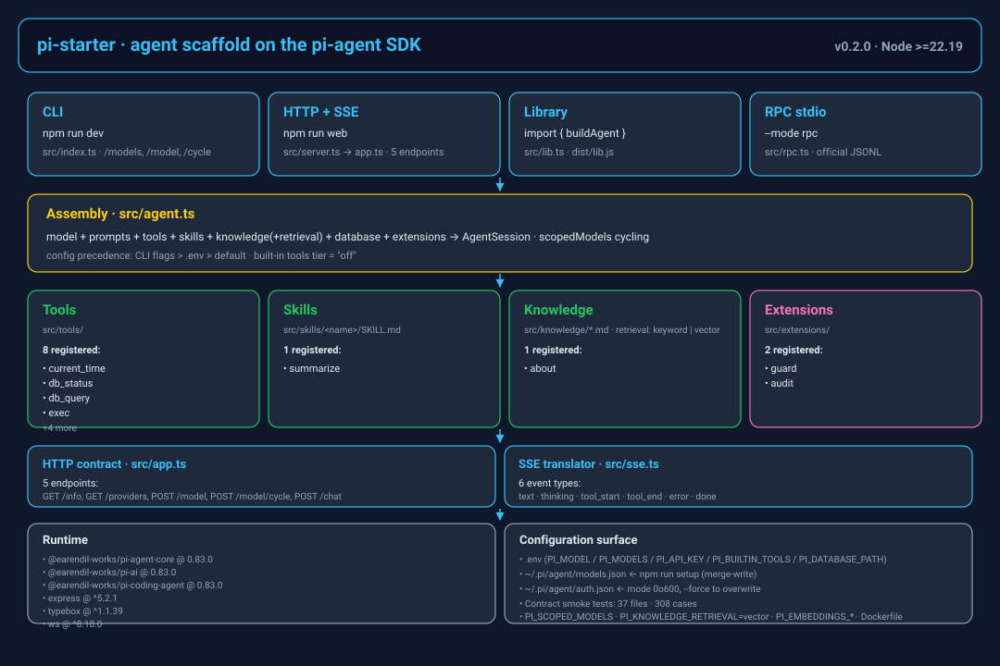
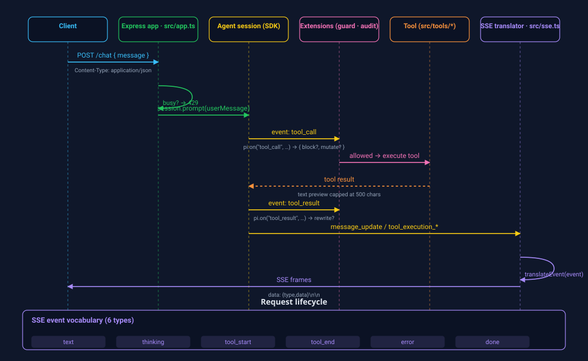

🧱 A runnable skeleton, not a demo
Wraps the SDK's createAgentSession into a single buildAgent(), then layers HTTP+SSE, WebSocket, an in-process CLI, and the official RPC stdio JSONL transport on the same core.
Agent scaffold · built on the pi-agent SDK
Clone it and it runs. Add tools, extensions, skills, knowledge, or a new persona — and it becomes a vertical agent.
Repo: github.com/LPK3215/pi-starter · Upstream SDK: earendil-works/pi
Positioning, value, and how it differs
Wraps the SDK's createAgentSession into a single buildAgent(), then layers HTTP+SSE, WebSocket, an in-process CLI, and the official RPC stdio JSONL transport on the same core.
Business logic enters through injection params (extraTools, extraSkillPaths, extraKnowledgeDirs, extraExtensions). User-level ~/.pi scanning stays off so nothing leaks into a deployed agent.
Three built-in-tool tiers (off / readonly / coding), fail-closed path guard, read-only SQL, approval gate — all local-first with no auth by default.
buildAgent() holds one conversation for REST; WebSocket runs multiple conversations per connection. Multi-user / public exposure is intentionally out of scope (see Security).Generated from source — scripts/visualization/generate_architecture.mjs

CLI, HTTP+SSE, library, official RPC stdio — one core behind all four.
SessionHub → ClientSession → Conversation → SnapshotEmitter → WebSocket, snapshot-driven with per-connection queues.
model + prompts + tools + skills + knowledge(+retrieval) + database + extensions → AgentSession, with scopedModels cycling.
The SDK ships no RAG — it prescribes "register your own searchable tool". Generated by generate_retrieval.mjs.

search_knowledge (SDK tool) and GET /knowledge/search share the same Retriever — no second implementation to drift.
KeywordRetriever is zero-dependency by default. PI_KNOWLEDGE_RETRIEVAL=vector switches to VectorRetriever (chunk → embed → cosine → aggregate by doc), with pluggable EmbeddingProvider + VectorStore.
Generated by generate_request_flow.mjs

Versions from package.json (single source)
| Layer | Choice | Version |
|---|---|---|
| Runtime | Node.js (built-in node:sqlite) | ≥ 22.19 |
| Language | TypeScript, strict ESM | 5.x |
| Agent SDK | @earendil-works/pi-agent-core · pi-ai · pi-coding-agent | 0.83.0 |
| HTTP | Express | ^5.2.1 |
| Schema | TypeBox | ^1.1.39 |
| WebSocket | ws | ^8.18.0 |
| Embeddings (optional) | @huggingface/transformers | ^4.3.1 |
| Tests | Node built-in test runner via tsx --test | 37 files · 308 cases |
Everything wired into the core
SKILL.md)/name)Expand / collapse each directory
agent.ts · app.ts · rpc.ts · config.ts · server.ts · index.ts · lib.ts · setup.ts · session-hub.ts · sse.ts · snapshot.ts · protocol.ts · models.ts · provider-keys.ts · settings.ts · metrics.ts · log.ts · graceful.tsDockerfile · README.md · README.zh-CN.md · CONTRIBUTING.md · SECURITY.md · CHANGELOG.md · FAQ.md · AUTHORS · LICENSEPick a mode
npm install
cp .env.example .env # fill PI_API_KEY / PI_MODEL
npm run setup # merge credentials into ~/.pi/agent/
npm run dev # interactive chat; /models /model /cyclenpm run web # binds 127.0.0.1:3000 by default
curl http://localhost:3000/health
curl http://localhost:3000/skills
curl "http://localhost:3000/knowledge/search?q=model"npm run dev -- --mode rpc # official SDK runRpcMode over stdio JSONL
# headless; shares the same resourceLoaderOptions as buildAgent()npm run build # → dist/import { buildAgent, createApp } from "pi-starter";
const agent = await buildAgent({
builtinTools: "off",
extraTools: [myTool],
extraKnowledgeDirs: ["/path/to/docs"],
knowledgeRetrieval: "vector", // opt-in RAG
});
const { app, dispose } = createApp({ agent, staticDir: false });docker build -t pi-starter .
docker run --rm -p 127.0.0.1:3000:3000 \
-v "$HOME/.pi/agent:/home/pi/.pi/agent:ro" pi-starter
# publish to loopback only — the service has no authFull table in README; kernel routes here
| Method · path | Purpose |
|---|---|
| GET /health · /info | Liveness / capability snapshot |
| POST /chat | Stream a prompt (SSE, or ?format=jsonl) |
| POST /interrupt · /model · /model/cycle | Abort turn · switch model · cycle rotation |
| POST /compact · /thinking · /context/compact | Context / reasoning controls |
| GET /model · /providers · /capabilities | Model list · provider auth status · capability matrix |
| GET /skills · /knowledge/search · /prompt-templates · /db | Resource discovery |
| POST /session · /session/edit · /session/rollback | Session tree: new branch · edit · rollback |
| POST /mcp/servers · /subagents/run · /approvals/:id | MCP add · run subagent · approve/reject tool call |
| WS /ws?session= | Bidirectional snapshot-driven transport |
Offline contract tests, never call a real model
test cases · 37 files
real WebSocket smoke checks
CI OSes (ubuntu / windows / macos)
npm run verify: typecheck · test · smoke · lint:unused (dead-code) · build · verify:embed · e2e (real restart/resume, no key). Contract smoke tests use an in-process SDK session double.Everything on disk
README.md — main guide (English)README.zh-CN.md — 中文文档（Chinese edition）docs/嵌入指南.md — embedding into an existing Express app (Chinese)docs/能力与边界.md — capability matrix & boundaries vs the SDK (Chinese)docs/项目分析报告.md — engineering review (Chinese)CONTRIBUTING.md — dev setup, PR flow, gatesSECURITY.md — security model & deployment cautionsCHANGELOG.md — release history (v0.2.0)FAQ.md — configuration & behaviour questionsCopyright (c) 2026 LPK3215. Full text: LICENSE.
LPK3215 <17538703215@163.com> — creator and primary maintainer. See AUTHORS and the contributors graph.
Cite as: LPK3215/pi-starter — an agent scaffold on the @earendil-works/pi-coding-agent SDK, v0.2.0.